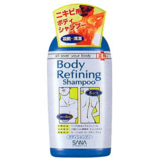

返回列表
产品名称：サナ ボディリファイニング シャンプー

常盤薬品工業 サナ ボディリファイニング シャンプー ３００ｍｌ
メーカー 常盤薬品工業
JANコード 4964596420979
商品の特徴
殺菌・清潔
薬用
成分・分量
＜配合成分＞
クロロフィル誘導体、メリッサエキス、イソプロピルメチルフェノール、セージエキス、ローズマリーエキス
用法及び用量
＜使用方法＞
お湯を含ませたタオル、バススポンジ、ボディブラシ等に適量をとって洗います。その後、十分にすすいでください。